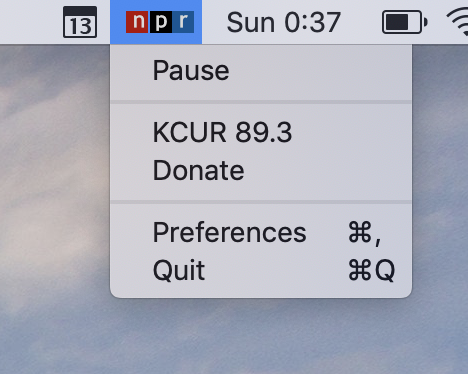

I built a macOS app to stream your favorite NPR station. It sits in your menubar, and stays out of your way.
There are a few notable features:
macOS media keys.Preferences window.The app was built in an afternoon, a few years back. It's built using Swift and the source is available on GitHub.